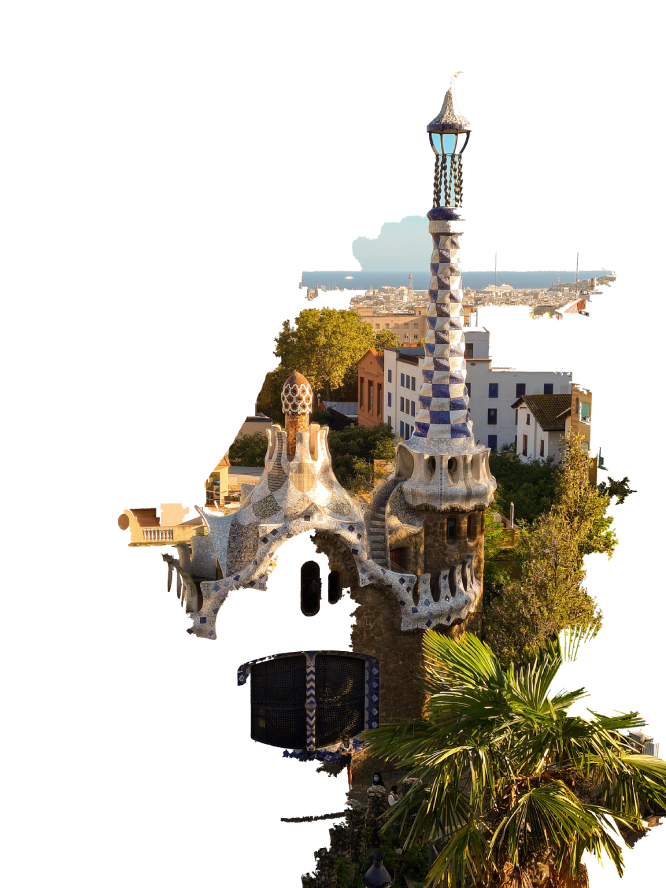
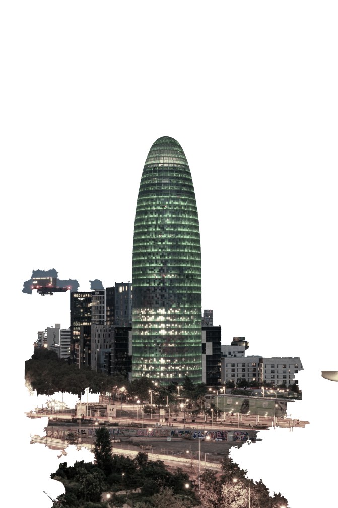

Desintegració i autonomia: el fenomen de les persones al carrer és un projecte de la Càtedra Barcelona d'Estudis d'Habitatge.
Un dels objectius de la investigació és buscar vincles causals que puguin explicar el fenomen de la població que es troba al carrer a Barcelona.
A través d'entrevistes semiestructurades, mètodes quali-quanti, s'apliquen qüestionaris en punts estratègics a la ciutat de Barcelona.
Els resultats de la recerca es visualitzen amb l'ajuda de gràfics, mapes i taules per tal de reduir la complexitat d'informació sobre el fenomen.
Quan es parla de la població sense llar, se citen reiteradament presumptes causes relacionades amb el fenomen, com ara l'alcoholisme, el consum de drogues, les malalties psicològiques i psiquiàtriques d'alta complexitat, els vincles familiars debilitats i relacions familiars interrompudes entre altres nexes causals. Resulta que de l'anàlisi de dades s'entén que cap d'aquestes variables explica el fet que la gent estigui permanentment al carrer. Això és el que pretén aclarir la present recerca, perquè si hi ha circumstàncies determinants en el curs generacional que deriven en la desintegració social, només les podem extreure de l'escolta.

La visualització quantificada d'entrevistes anonimitzades mitjançant tecnologies gràfiques, cartogràfiques i amb taules és essencial per a la comprensió del fenomen de persones que es troben permanentment al carrer.
amb les seves paraules